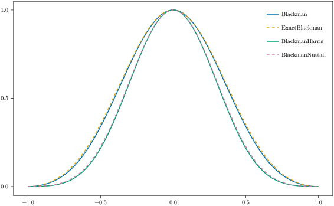
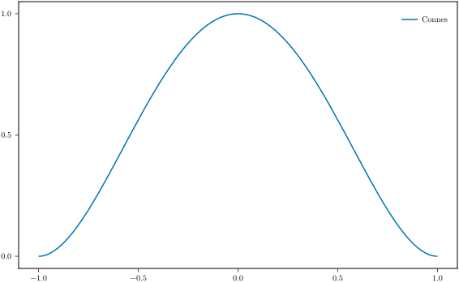
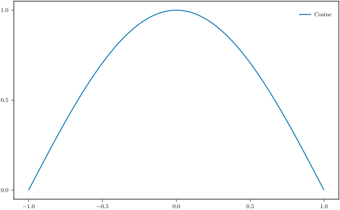
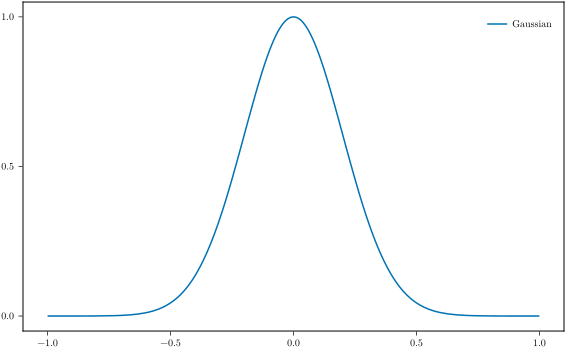
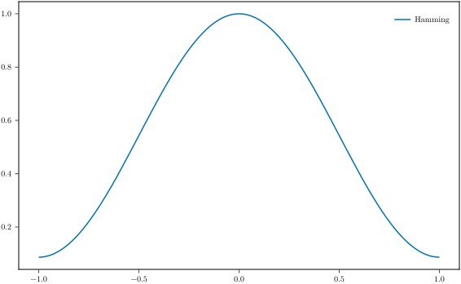
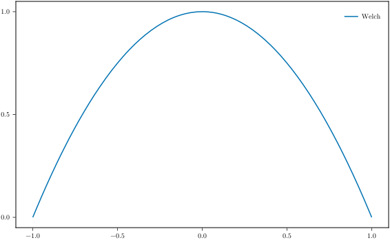
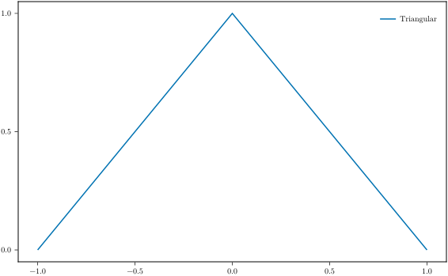
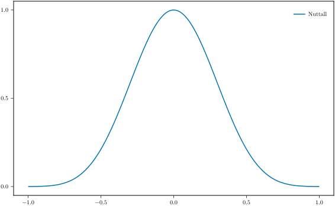
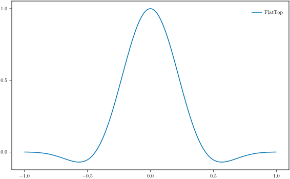
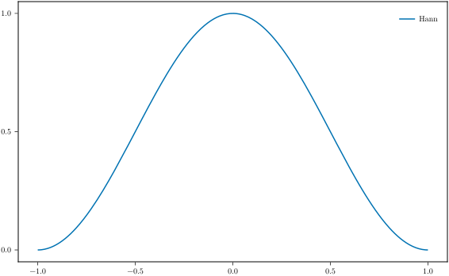

Apodization
using TransferFunctions: Apodization as ApoApodization functions
TransferFunctions.Apodization.Blackman — TypeBlackman{T,α} == SineSum{T,((1 - α) / 2, 1 / 2, α / 2)} <: ApodizationFunction{T}Blackman apodization function with the coefficient α (Defaults to α = 0.16).
See SineSum See also ExactBlackman
TransferFunctions.Apodization.ExactBlackman — TypeExactBlackman{T} == Blackman{T,683 // 4652}See Blackman
TransferFunctions.Apodization.BlackmanHarris — TypeBlackmanHarris{T} == SineSum{T,(0.35875, 0.48829, 0.14128, 0.01168)} <: ApodizationFunction{T}See SineSum
TransferFunctions.Apodization.BlackmanNuttall — TypeBlackmanNuttall{T} = SineSum{T,(0.3635819, 0.4891775, 0.1365995, 0.0106411)} <: ApodizationFunction{T}See SineSum
blackman = Apo.Blackman()
exact_blackman = Apo.ExactBlackman()
blackman_harris = Apo.BlackmanHarris()
blackman_nuttall = Apo.BlackmanNuttall()
TransferFunctions.Apodization.Connes — TypeConnes{T} <: ApodizationFunction{T}connes = Apo.Connes{Float64}()
TransferFunctions.Apodization.Cosine — TypeCosine{T} == PowerCosine{T, 1} <: ApodizationFunction{T}- zero-phase function: $w₀(r) = cos(πr/2)$
- instrument function: $I(k) = 4cos(2k)/(π(1 - 16k²))$
cosine = Apo.Cosine{Float64}()
TransferFunctions.Apodization.Gaussian — TypeGaussian{T} <: ApodizationFunction{T}Gaussian apodization function with a given standard deviation σ.
- zero-phase function: $w₀(r) = e^{-r²/2σ²}$
gaussian = Apo.Gaussian(0.2)
TransferFunctions.Apodization.Hamming — TypeHamming{T} == SineSum{T,(25//46, 21//46)} <: ApodizationFunction{T}See SineSum
hamming = Apo.Hamming{Float64}()
TransferFunctions.Apodization.Welch — TypeWelch{T} <: ApodizationFunction{T}- zero-phase function: $w₀(r) = 1 - r²$
welch = Apo.Welch{Float64}()
TransferFunctions.Apodization.PowerCosine — TypePowerCosine{T} <: ApodizationFunction{T}- zero-phase function: $w₀(r) = cos(πr/2)^α$
TransferFunctions.Apodization.Triangular — TypeTriangular{T} <: ApodizationFunction{T}Formulas:
- zero-phase function: $w₀(r) = 1-|r|$
- instrument function: $I(k) = sinc²(π k)$
triangular = Apo.Triangular{Float64}()
TransferFunctions.Apodization.Nuttall — TypeNuttall{T} == SineSum{T,(0.355768, 0.487396, 0.144232, 0.012604)} <: ApodizationFunction{T}See SineSum
nuttall = Apo.Nuttall{Float64}()
TransferFunctions.Apodization.SineSum — TypeSineSum{T,Cs} <: ApodizationFunction{T}Sum of sines with coefficients Cs with output type of T
- zero-phase function: $w₀(r) = ∑ᴺₖ₌₀ (-1)ᵏ Cs[k] cos(πk(r + 1))$
Instances: Hamming, Nuttall, BlackmanNuttall, BlackmanHarris, FlatTop, Blackman and ExactBlackman
TransferFunctions.Apodization.FlatTop — TypeFlatTop{T} = SineSum{T,(0.21557895, 0.41663158, 0.277263158, 0.083578947, 0.006947365)} <: ApodizationFunction{T}MATLAB variant of the flat-top filter
See SineSum
flat_top = Apo.FlatTop{Float64}()
TransferFunctions.Apodization.Hann — TypeHann{T} == PowerCosine{T,2} <: ApodizationFunction{T}Formulas:
- zero-phase function: $w₀(r) = cos²(πr/2)$
hann = Apo.Hann{Float64}()